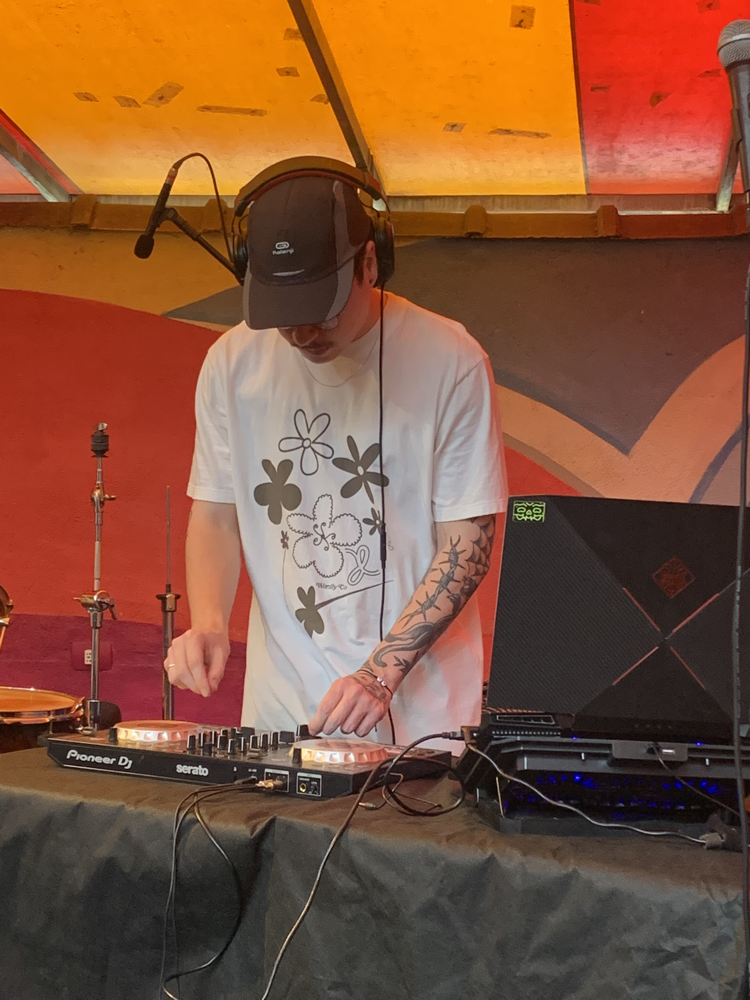
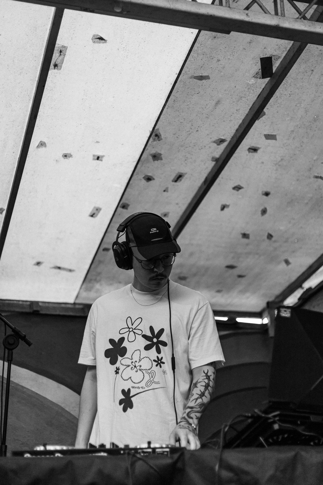
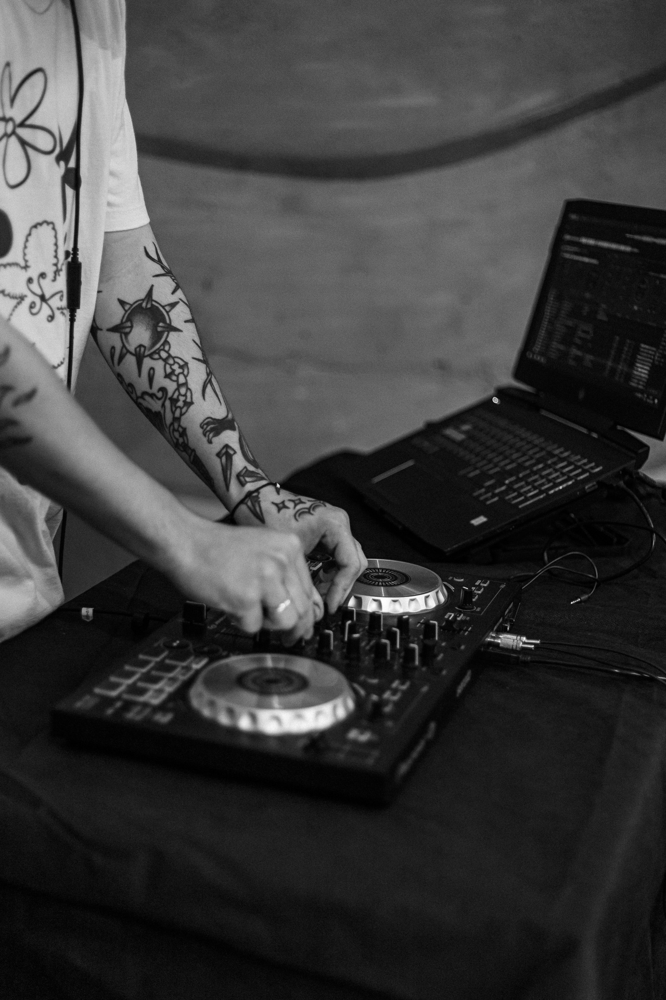

perfil



rafao é produtor musical, DJ, sound designer e engenheiro de áudio.
Produção musical, mixagem, masterização e sound design. O catálogo passa por experimental, jungle, drum & bass, UK garage, dubstep, grime, ambient, house e downtempo. Tem lançamento no selo Bloodworm Trax e atua também sob o alias DJ Aurous, com tracks que misturam house / UK garage / lo-fi. Trabalha com programação de áudio, integração de plugins VST e sintetizadores virtuais, aplicando design de som em projetos de software e hardware.
Desenvolve produção própria e remixes, passando por estruturas de beat complexas, texturas atmosféricas e design de som para mídia digital e física. O trabalho equilibra autoria pessoal e colaborações, com edições que circulam em bandas digitais e coletâneas selecionadas.
- selo
- Bloodworm Trax
- alter ego
- DJ Aurous